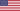

1. Victor Wembanyama France Metropolitans 92 (France) → Spurs de San Antonio
2. Brandon Miller  États-Unis Crimson Tide de l'Alabama → Hornets de Charlotte
3. Scoot Henderson États-Unis NBA G League Ignite (G League) → Trail Blazers de Portland
4. Amen Thompson États-Unis City Reapers (Overtime Elite) → Rockets de Houston
5. Ausar Thompson États-Unis City Reapers (Overtime Elite) → Pistons de Détroit
6. Anthony Black États-Unis Razorbacks de l'Arkansas → Magic d'Orlando
7. Bilal Coulibaly France Metropolitans 92 (France) → Pacers de l'Indiana (transféré à Washington)
8. Jarace Walker États-Unis Cougars de Houston → Wizards de Washington (transféré à Indiana)
9. Taylor Hendricks États-Unis Knights de l'UCF → Jazz de l'Utah
10. Cason Wallace États-Unis Wildcats du Kentucky → Mavericks de Dallas (transféré à Oklahoma City)
11. Jett Howard États-Unis Wolverines du Michigan → Magic d'Orlando (de Chicago)
12. Dereck Lively II États-Unis Blue Devils de Duke → Thunder d'Oklahoma City (transféré à Dallas)
13. Gradey Dick États-Unis Jayhawks du Kansas → Raptors de Toronto
14. Jordan Hawkins États-Unis Huskies du Connecticut → Pelicans de La Nouvelle-Orléans
15. Kobe Bufkin États-Unis Wolverines du Michigan → Hawks d'Atlanta
| Prénom et Nom | Nationalité | Provenance | Équipe/th> |
|---|---|---|---|
| Victor Wembanyama | France | Metropolitans 92 (France) | Spurs de San Antonio |
| Marie | Dubois | 25 | |
| Pierre | Durand | 35 |